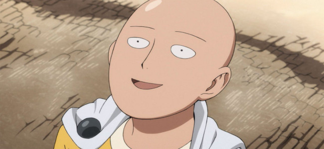
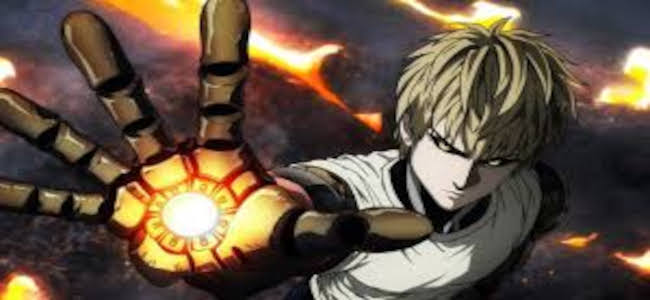
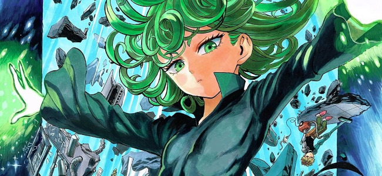
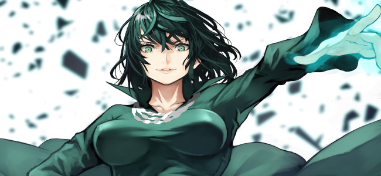
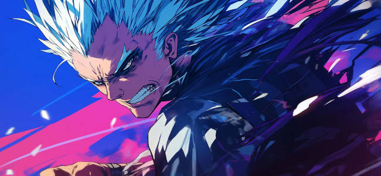

Saitama é o protagonista de One Punch Man, uma obra criada por ONE, e é talvez um dos personagens mais subversivos do universo dos animes e mangás de ação. Conhecido por derrotar qualquer inimigo com apenas um soco, Saitama é tão poderoso que perdeu completamente o senso de desafio e empolgação nas batalhas, o que o leva a viver em constante tédio e apatia. Ele se tornou um herói por "hobby", após treinar intensamente por três anos — a ponto de ficar careca — e adquirir uma força tão absurda que transcende qualquer lógica dentro do próprio universo da série.

Por trás de sua aparência simples, comportamento despretensioso e humor deadpan, Saitama é uma crítica viva aos clichês do gênero shounen. Em vez de buscar ficar mais forte, seu dilema é existencial: ele luta para sentir novamente a emoção, o propósito e o reconhecimento. Apesar disso, ele mantém um senso de justiça puro e genuíno, ajudando os outros sem esperar recompensa, mesmo sendo frequentemente subestimado ou ignorado. Sua relação com personagens como Genos, seu discípulo fiel, mostra que, apesar de invencível, Saitama ainda valoriza conexões humanas. Ele é o retrato de um herói que tem tudo fisicamente, mas ainda busca aquilo que dá sentido à força: emoção, propósito e pertencimento.
Genos
Genos é um dos personagens principais de One Punch Man, conhecido como o “Ciborgue Demônio” e discípulo dedicado de Saitama. Após ter sua vila destruída e sua família assassinada por um ciborgue descontrolado, Genos foi transformado em uma arma humana por um cientista chamado Dr. Kuseno. Desde então, ele vive com o objetivo de se tornar mais forte e vingar aqueles que perdeu. Com uma aparência imponente, comportamento sério e uma determinação inabalável, Genos contrasta fortemente com o jeito despreocupado de Saitama, o que torna a dinâmica entre os dois envolvente e cativante.

Apesar de sua força impressionante, armamentos avançados e inúmeras melhorias cibernéticas, Genos está sempre consciente de suas limitações — especialmente quando comparado ao poder incompreensível de seu mestre. Isso o motiva a buscar constantemente evolução, tanto física quanto moral. Ele respeita profundamente Saitama, não apenas por sua força, mas também por sua humildade e filosofia de vida simples. Genos representa o arquétipo do discípulo fiel, mas sua jornada vai além disso: ele busca identidade, justiça e propósito. Sua seriedade, lealdade e o contraste entre sua humanidade e sua natureza mecânica fazem dele um dos personagens mais trágicos e admiráveis da série.
Tatsumaki
Tatsumaki, também conhecida como Tornado do Terror, é uma das heroínas mais poderosas do universo de One Punch Man, ocupando a posição de Classe S, Rank 2 na Associação de Heróis. Pequena em estatura, com aparência infantil e expressão constantemente impaciente, Tatsumaki é, na verdade, uma esper extremamente poderosa, com habilidades psíquicas capazes de erguer cidades, repelir meteoros e destruir inimigos com facilidade esmagadora. Sua força é tão absurda que ela raramente encontra adversários à altura, o que alimenta sua personalidade arrogante, impetuosa e frequentemente explosiva.

Apesar de sua postura dura e autoritária, Tatsumaki carrega um passado doloroso que moldou sua visão de mundo. Ela foi mantida em cativeiro e tratada como uma arma ainda na infância, o que fez com que desenvolvesse uma profunda desconfiança das pessoas e um senso de responsabilidade exagerado, especialmente em relação à sua irmã mais nova, Fubuki. Esse lado mais humano de Tatsumaki raramente vem à tona, mas é o que a torna complexa: por trás da fachada de frieza e poder descomunal, existe alguém marcada por solidão e pela necessidade de proteger o que lhe resta. Ela é o retrato da força absoluta aliada a uma alma ferida, cuja dureza externa esconde um forte senso de dever e proteção.
Fubuki
Fubuki, também conhecida como Tempestade do Inferno, é uma poderosa esper e líder do grupo dos Heróis Classe B no universo de One Punch Man. Irmã mais nova de Tatsumaki, Fubuki vive à sombra do poder esmagador da irmã, o que moldou profundamente sua personalidade. Diferente de Tatsumaki, Fubuki busca exercer influência através da inteligência estratégica, do carisma e do controle de grupo, formando sua própria equipe de heróis subordinados. Ela representa um equilíbrio entre força psíquica considerável e habilidades políticas, sendo uma personagem que usa tanto o poder quanto a manipulação social para atingir seus objetivos.

Ao longo da série, Fubuki mostra um lado complexo e vulnerável. Ela é extremamente consciente de suas limitações, especialmente em comparação com heróis de Classe S, mas ainda assim se esforça para crescer e provar seu valor. Seu encontro com Saitama marca um ponto de virada: ao ver alguém tão poderoso e despretensioso, ela começa a questionar suas próprias motivações e visão de mundo. Fubuki representa a luta entre ambição e aceitação, poder e insegurança. Ao mesmo tempo, sua evolução demonstra um desejo genuíno de superar seus próprios medos e construir conexões verdadeiras — não apenas liderar, mas pertencer. Sua relação com Saitama e sua rivalidade velada com Tatsumaki adicionam camadas emocionais ricas à sua trajetória.
Garou
Garou é um dos personagens mais complexos e fascinantes de One Punch Man, atuando inicialmente como antagonista, mas com motivações que vão muito além do clichê do vilão. Conhecido como o "Caçador de Heróis", Garou é um ex-discípulo do Mestre Bang (Silver Fang) que se rebela contra a estrutura da sociedade e o sistema de heróis, questionando a lógica maniqueísta de "heróis bons" e "monstros maus". Desde jovem, ele simpatizava com os vilões das histórias e detestava a forma como a sociedade sempre marginalizava os "fracos", o que o levou a desenvolver um senso distorcido de justiça: ele quer se tornar o monstro supremo para desafiar o mundo inteiro.

Garou não é simplesmente movido por ódio ou desejo de destruição, mas sim por uma ideologia intensa. Ele quer provar que até um "vilão" pode se levantar contra todos e mudar as regras do jogo. Com uma força física que cresce de maneira absurda à medida que luta — quase como um "monstro evolutivo" — Garou desafia repetidamente heróis de alto nível e mesmo ameaças globais. No entanto, por trás de sua aparência brutal e comportamento agressivo, há um garoto ferido tentando dar sentido a um mundo que sempre o tratou com injustiça. Sua trajetória não é apenas de força crescente, mas também de autoconhecimento, dúvida e transformação. Garou representa o caos com propósito, o antagonista que, no fundo, busca ser compreendido — e talvez até redimido.